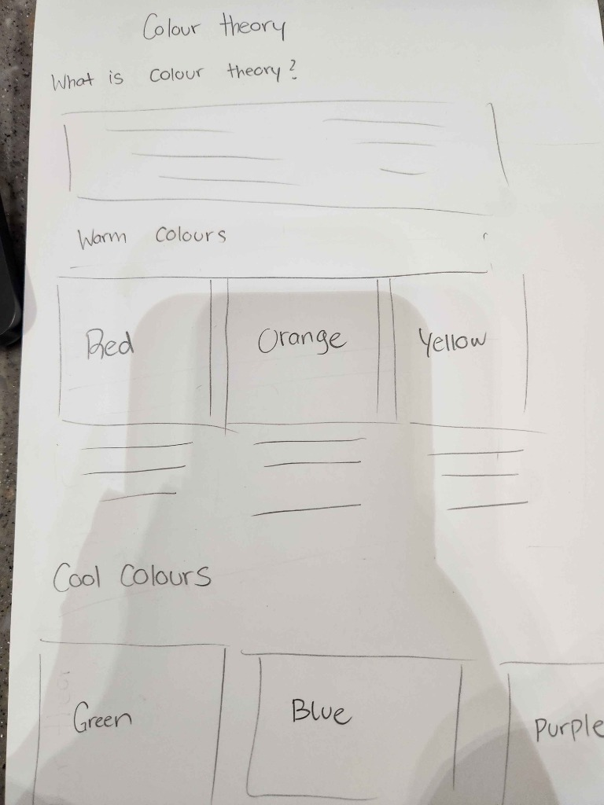

Colour theory is a practical framework used in design to understand how colours interact, blend, and influence human emotions. A consistent and intentional colour palette helps guide viewers' focus, evoke specific feelings, and create visually balanced products.
Red triggers strong emotions such as passion, urgency, and excitement. It is powerful and best balanced with neutral tones.
Orange is energetic and cheerful. It is associated with creativity, enthusiasm, and playfulness in visual design.
Yellow evokes feelings of warmth, happiness, and optimism. It works great as a bright accent colour to draw attention.
Green represents nature, growth, and tranquility. It provides balance and creates a calm, refreshing atmosphere.
Blue symbolizes trust, peace, and stability. It is soothing and widely used across digital products for a sense of safety.
Purple combines calm blue and vibrant red. Historically linked with luxury and royalty, it evokes creativity and quality.
High Contrast Pairing: Pairing warm colours (like Red or Yellow) with cool colours (like Blue or Purple) creates dynamic energy and focus.
Serene Pairing: Grouping colours within the same temperature family creates a cohesive, calming atmosphere.
This prototype was designed and structured based on the original hand-drawn layout sketch below:
